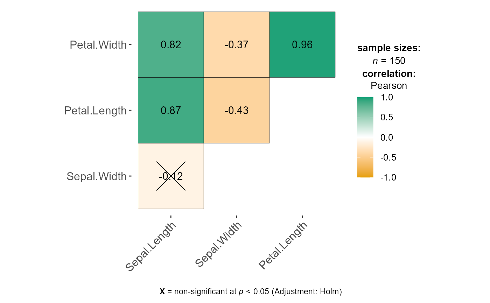

Visualization of a correlalogram (or correlation matrix)
ggcorrmat(data, cor.vars, cor.vars.names = NULL, output = "plot", type = "full", method = "square", corr.method = "pearson", exact = FALSE, continuity = TRUE, beta = 0.1, digits = 2, sig.level = 0.05, p.adjust.method = "none", hc.order = FALSE, hc.method = "complete", lab = TRUE, colors = c("#E69F00", "white", "#009E73"), outline.color = "black", ggtheme = ggplot2::theme_bw, ggstatsplot.layer = TRUE, title = NULL, subtitle = NULL, caption = NULL, caption.default = TRUE, lab.col = "black", lab.size = 5, insig = "pch", pch = 4, pch.col = "black", pch.cex = 11, tl.cex = 12, tl.col = "black", tl.srt = 45, axis.text.x.margin.l = 0, axis.text.x.margin.t = 0, axis.text.x.margin.r = 0, axis.text.x.margin.b = 0, messages = TRUE)
Arguments
| data | Dataframe from which variables specified are preferentially to be taken. |
|---|---|
| cor.vars | List of variables for which the correlation matrix is to be computed and visualized. |
| cor.vars.names | Optional list of names to be used for |
| output | Character that decides expected output from this function:
|
| type | Character, |
| method | Character argument that decides the visualization method of
correlation matrix to be used. Allowed values are |
| corr.method | A character string indicating which correlation
coefficient is to be computed ( |
| exact | A logical indicating whether an exact p-value should be
computed. Used for Kendall's tau and Spearman's rho. For more details,
see |
| continuity | A logical. If |
| beta | A numeric bending constant for robust correlation coefficient
(Default: |
| digits | Decides the number of decimal digits to be displayed (Default:
|
| sig.level | Significance level (Default: |
| p.adjust.method | What adjustment for multiple tests should be used?
( |
| hc.order | Logical value. If |
| hc.method | The agglomeration method to be used in |
| lab | Logical value. If |
| colors | A vector of 3 colors for low, mid, and high correlation values. |
| outline.color | The outline color of square or circle. Default value is
|
| ggtheme | A function, |
| ggstatsplot.layer | Logical that decides whether |
| title | The text for the plot title. |
| subtitle | The text for the plot subtitle. |
| caption | The text for the plot caption. If not specified (if it is
|
| caption.default | Logical decides whether the default caption should be shown. |
| lab.col | Color to be used for the correlation coefficient labels
(applicable only when |
| lab.size | Size to be used for the correlation coefficient labels
(applicable only when |
| insig | Character used to show specialized insignificant correlation
coefficients ( |
| pch | Decides the glyphs (read point shapes) to be used for
insignificant correlation coefficients (only valid when |
| pch.col, pch.cex | The color and the cex (size) of |
| tl.cex, tl.col, tl.srt | The size, the color, and the string rotation of text label (variable names, i.e.). |
| axis.text.x.margin.t, axis.text.x.margin.r, axis.text.x.margin.b, axis.text.x.margin.l | Margins between x-axis and the variable name texts (t: top, r: right, b:
bottom, l:left), especially useful in case the names are slanted, i.e. when
the tl.srt is between |
| messages | Decides whether messages references, notes, and warnings are
to be displayed (Default: |
Value
Correlation matrix plot or correlation coefficient matrix or matrix of p-values.
References
https://cran.r-project.org/package=ggstatsplot/vignettes/ggcorrmat.html
See also
Examples
# to get the correlalogram # note that the function will run even if the vector with variable names is # not of same length as the number of variables ggstatsplot::ggcorrmat( data = ggplot2::msleep, cor.vars = sleep_total:bodywt, cor.vars.names = c("total sleep", "REM sleep") )#> Warning: The number of variable names does not equal the number of variables.#># to get the correlation matrix ggstatsplot::ggcorrmat( data = ggplot2::msleep, cor.vars = sleep_total:bodywt, output = "r" )#> # A tibble: 6 x 7 #> variable sleep_total sleep_rem sleep_cycle awake brainwt bodywt #> <chr> <dbl> <dbl> <dbl> <dbl> <dbl> <dbl> #> 1 sleep_total 1 0.75 -0.47 -1 -0.36 -0.31 #> 2 sleep_rem 0.75 1 -0.34 -0.75 -0.22 -0.33 #> 3 sleep_cycle -0.47 -0.34 1 0.47 0.85 0.42 #> 4 awake -1 -0.75 0.47 1 0.36 0.31 #> 5 brainwt -0.36 -0.22 0.85 0.36 1 0.93 #> 6 bodywt -0.31 -0.33 0.42 0.31 0.93 1# setting output = "p-values" (or "p") will return the p-value matrix ggstatsplot::ggcorrmat( data = ggplot2::msleep, cor.vars = sleep_total:bodywt, corr.method = "r", p.adjust.method = "fdr", output = "p" )#> Note: In the correlation matrix, the upper triangle denotes p-values adjusted for multiple comparisons, while the lower triangle denotes unadjusted p-values.#>#> # A tibble: 6 x 7 #> variable sleep_total sleep_rem sleep_cycle awake brainwt bodywt #> <chr> <dbl> <dbl> <dbl> <dbl> <dbl> <dbl> #> 1 sleep_total 0. 1.53e-12 2.64e- 3 0. 6.79e- 6 5.50e- 7 #> 2 sleep_rem 4.07e-13 0. 1.98e- 2 1.53e-12 5.20e- 3 1.03e- 3 #> 3 sleep_cycle 2.28e- 3 1.98e- 2 0. 2.64e- 3 4.46e-10 3.98e- 6 #> 4 awake 0. 4.07e-13 2.28e- 3 0. 6.79e- 6 5.50e- 7 #> 5 brainwt 4.53e- 6 4.85e- 3 1.49e-10 4.53e- 6 0. 2.42e-17 #> 6 bodywt 2.57e- 7 7.52e- 4 2.12e- 6 2.57e- 7 3.22e-18 0.# setting output = "ci" will return the confidence intervals for unique # correlation pairs ggstatsplot::ggcorrmat( data = ggplot2::msleep, cor.vars = sleep_total:bodywt, output = "ci" )#> # A tibble: 15 x 7 #> pair r lower upper p lower.adj upper.adj #> <chr> <dbl> <dbl> <dbl> <dbl> <dbl> <dbl> #> 1 slp_t-slp_r 0.752 0.617 0.844 2.92e- 12 0.531 0.877 #> 2 slp_t-slp_c -0.474 -0.706 -0.150 6.17e- 3 -0.786 0.0302 #> 3 slp_t-awake -1.000 -1.000 -1.000 2.42e-226 -1.000 -1.000 #> 4 slp_t-brnwt -0.360 -0.569 -0.108 6.35e- 3 -0.653 0.0257 #> 5 slp_t-bdywt -0.312 -0.494 -0.103 4.09e- 3 -0.572 0.00539 #> 6 slp_r-slp_c -0.338 -0.614 0.0120 5.84e- 2 -0.715 0.191 #> 7 slp_r-awake -0.752 -0.844 -0.617 2.91e- 12 -0.877 -0.531 #> 8 slp_r-brnwt -0.221 -0.476 0.0670 1.31e- 1 -0.580 0.209 #> 9 slp_r-bdywt -0.328 -0.535 -0.0826 9.95e- 3 -0.620 0.0452 #> 10 slp_c-awake 0.474 0.150 0.706 6.17e- 3 -0.0302 0.786 #> 11 slp_c-brnwt 0.852 0.709 0.927 2.42e- 9 0.603 0.950 #> 12 slp_c-bdywt 0.418 0.0809 0.669 1.73e- 2 -0.0997 0.757 #> 13 awake-brnwt 0.360 0.108 0.569 6.35e- 3 -0.0257 0.653 #> 14 awake-bdywt 0.312 0.103 0.494 4.09e- 3 -0.00543 0.572 #> 15 brnwt-bdywt 0.934 0.889 0.961 9.16e- 26 0.858 0.970# modifying few elements of the correlation matrix by changing function defaults ggstatsplot::ggcorrmat( data = datasets::iris, cor.vars = c(Sepal.Length, Sepal.Width, Petal.Length, Petal.Width), sig.level = 0.01, ggtheme = ggplot2::theme_bw, hc.order = TRUE, type = "lower", outline.col = "white", title = "Dataset: Iris" )